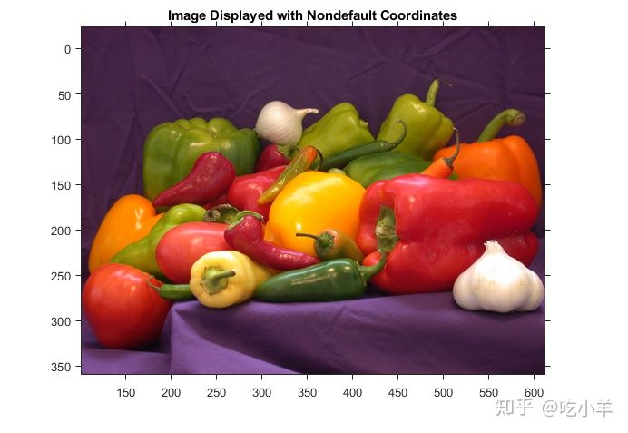

Home
本示例说明如何通过更改显示图像的XData和YData属性来指定非默认的世界坐标系。
读取图像。
I = imread("peppers.png");
使用固有坐标系显示图像，并在ax中返回图像的属性。打开轴以显示坐标系。
figure
ax = imshow(I);
title('Image Displayed with Intrinsic Coordinates')
axis on
检查x和y坐标的范围，这些范围存储在ax中的XData和YData属性。范围与图像的维度匹配。
xrange = ax.XData
xrange = 1×2
1 512
yrange = ax.YData
yrange = 1×2
1 384
更改x和y坐标的范围。本示例通过将x坐标加100将图像向右移动，并通过将y坐标减去25来向上移动图像。
xrangeNew = xrange + 100; yrangeNew = yrange - 25;
显示图像，指定偏移的空间坐标。
figure
axNew = imshow(I,'XData',xrangeNew,'YData',yrangeNew);
title('Image Displayed with Nondefault Coordinates');
axis on

确认新图像的x和y坐标范围与xrangeNew和yrangeNew指定的移动范围相匹配。
axNew.XData
ans = 1×2
101 612
axNew.YData
ans = 1×2
-24 359
======================================================================
我的测试结果及程序
下面是我测试的代码：

注：本文根据MATLAB官网内容修改而成。